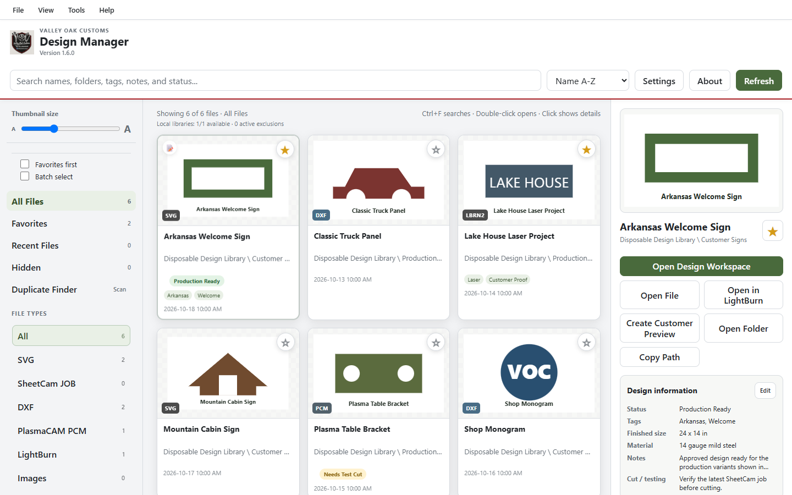
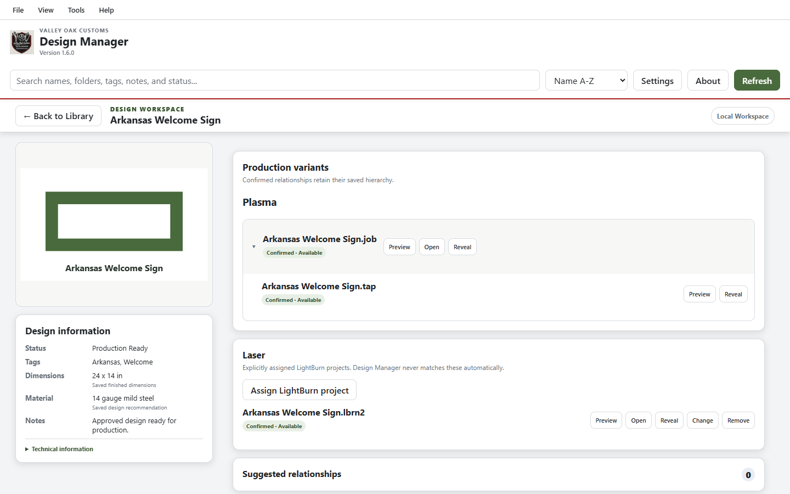
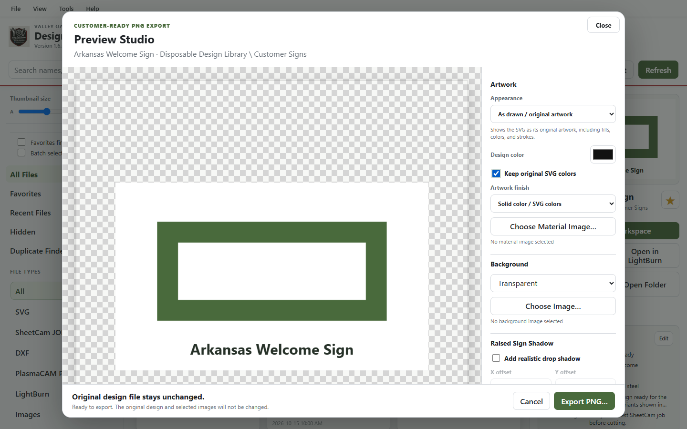

Built in the shop, for the shop
Valley Oak Software
Practical tools built around real CNC plasma, fabrication, and small-shop workflows—without turning your files or your business into somebody else's cloud subscription.
Explore Design ManagerWindows desktop software
Valley Oak Design Manager
Find it. Organize it. Open it. Make it.
Valley Oak Design Manager is practical Windows software for CNC plasma, laser, and small-shop file organization. It gives SVG, DXF, PCM, LightBurn, image, JOB, TAP, and NC files a visual, searchable home while leaving the original files where you put them.
- Find any design fast. Organize and search by name, folder, tags, notes, status, collections, favorites, or recent use.
- Preview more shop files. See SVG, DXF, supported PlasmaCAM PCM 1.01, and embedded LightBurn project thumbnails without changing the originals.
- Connect Plasma and Laser work. Keep confirmed SheetCam JOB and TAP/NC relationships plus assigned LightBurn LBRN2 projects with the right design.
- See the whole job in Design Workspace. Review the original design, saved shop information, and related Plasma and Laser production files in one place.
- Create customer proofs in Preview Studio. Build polished PNG previews while leaving the original design file unchanged.
- Upgrade with a verified safety backup. Setup backs up and verifies existing local data before replacing application files.
Upgrading? Close Design Manager and install v1.6.0 over the current public version. Setup first creates and verifies a timestamped backup of the production profile and local integration data. Shared Workspace network data is not copied.
What is new in v1.6.0: PlasmaCAM PCM previews, embedded LightBurn thumbnails, explicit Plasma and Laser workflow relationships, clearer refresh and File Activity wording, improved scrolling, and automatic verified upgrade backups.
Official stable release
Checking the approved GitHub release…
Includes a 30-day full-feature trial. No payment is required to download.
Licensing
Built for ownership, not another monthly bill.
A $99 lifetime Design Manager 1.x license activates up to two PCs and continues operating offline after activation.
Early Adopter Launch — $79 for the first 15 licenses with code EARLY20. Regular price $99. Stripe confirms availability and the final price during checkout.


